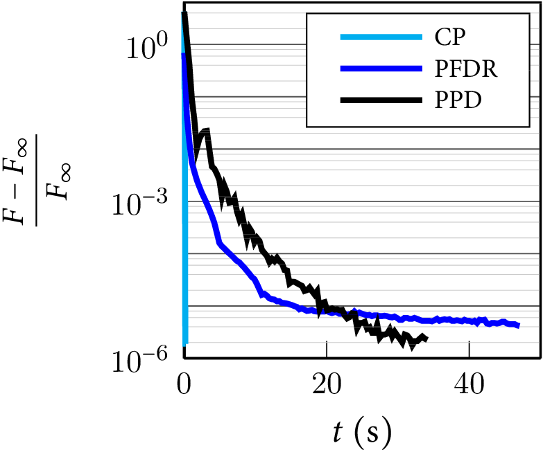
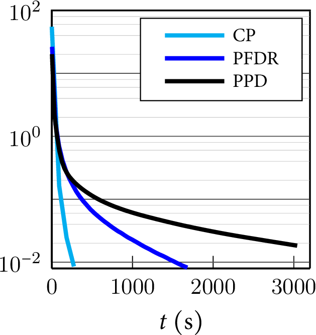

|
medium-scale setting of brain source identification for electroencephalography (|V| = 19 626, |E| = 29 439), using fused LASSO

|
large-scale multidimensional setting of semantic labeling of 3D point cloud (|V| = 3 000 111, |E| = 17 206 938), using simplex-constraint convex relaxation

|